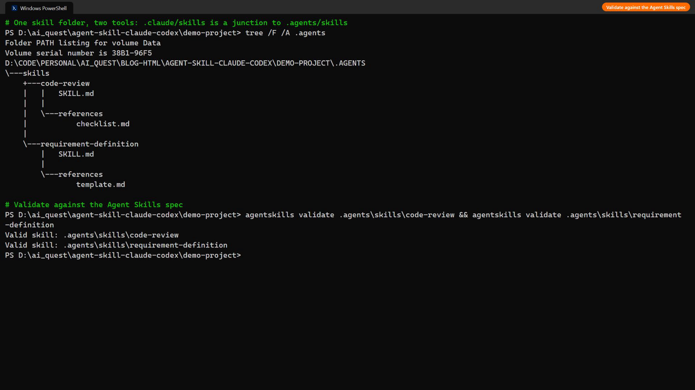
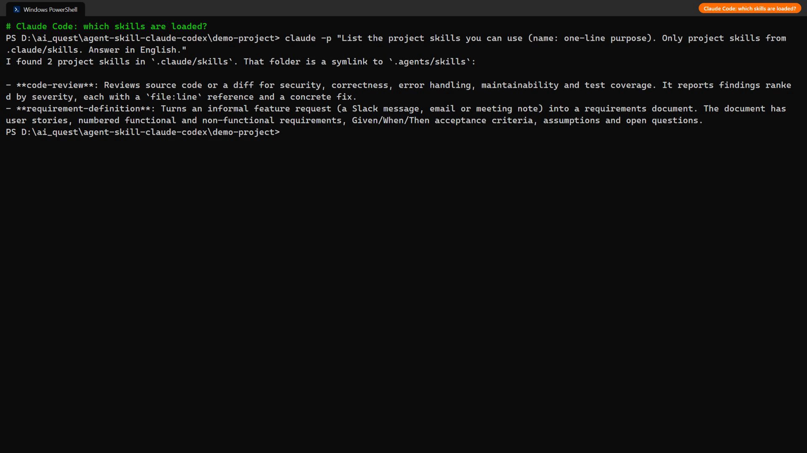
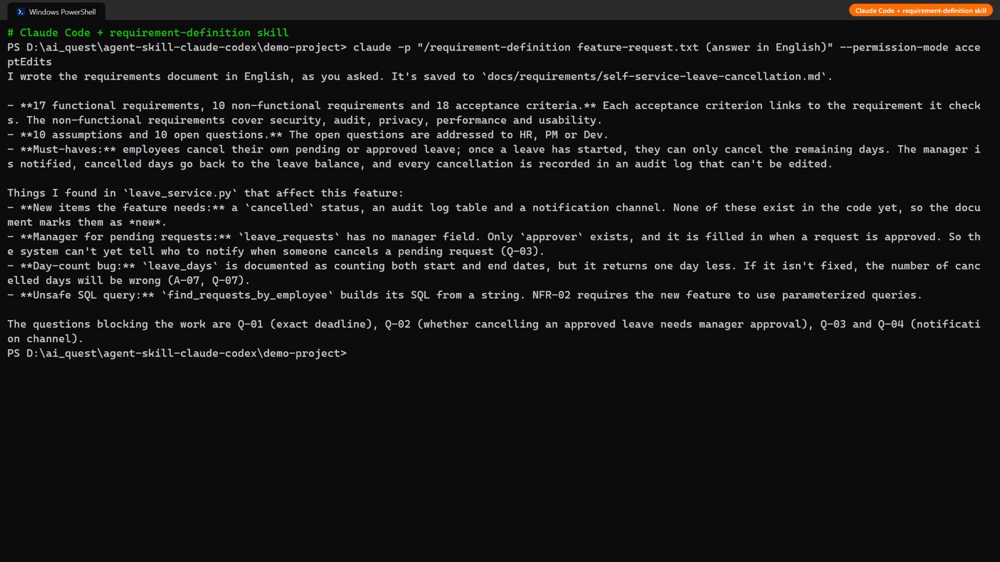
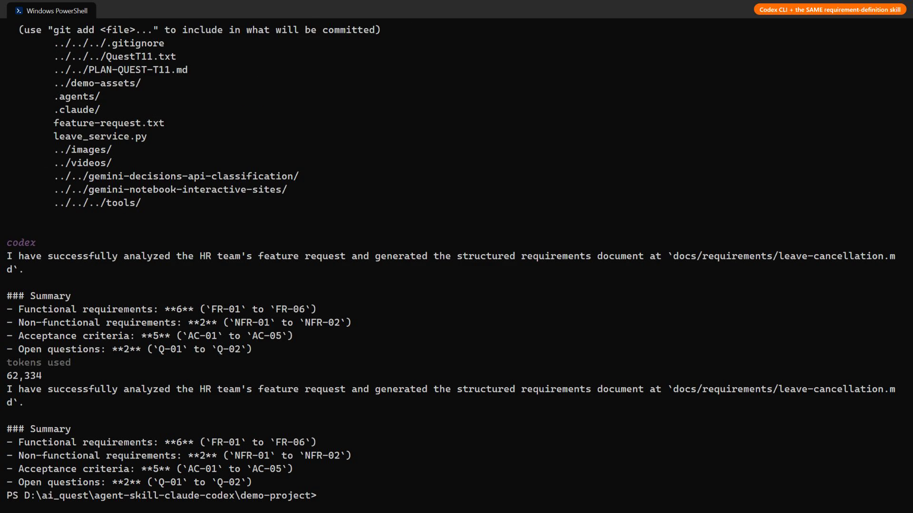
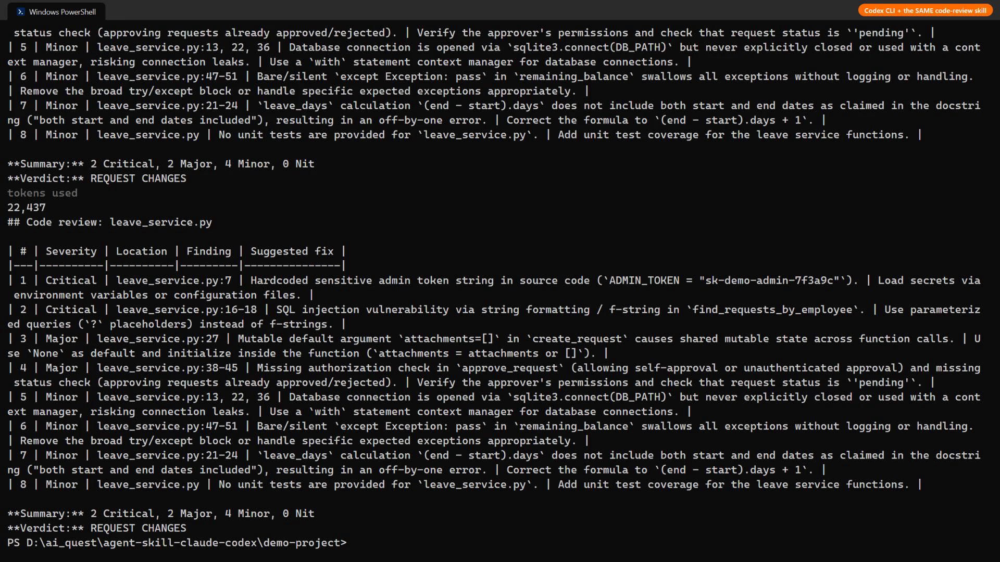

1. Vì sao skill dùng chung quan trọng
Agent Skills là các thư mục chứa hướng dẫn (một file SKILL.md cùng references và scripts tùy chọn) mà coding agent chỉ nạp khi tác vụ cần đến. Team của chúng tôi, cũng như nhiều team khác, không dùng một agent duy nhất: có người thích Claude Code, người khác thích Codex, còn reviewer dùng GitHub Copilot. Nếu mỗi công cụ cần file prompt riêng, checklist review và template requirement của chúng tôi sẽ dần lệch nhau.
Anthropic đã tặng đặc tả Agent Skills cho Agentic AI Foundation vào tháng 10 năm 2026, và cả Codex lẫn GitHub Copilot đều đọc cùng một định dạng. Câu hỏi của quest này rất thực tế: tôi có thể viết quy trình định nghĩa requirement và quy trình code review một lần, rồi nhận được cùng một hành vi từ Claude Code và Codex không?
2. Định dạng Agent Skills trong năm phút
Đặc tả mở tại agentskills.io được cố ý giữ rất nhỏ gọn:
| Thành phần | Quy tắc |
|---|---|
SKILL.md | YAML frontmatter nằm giữa hai dòng ---, sau đó là hướng dẫn bằng Markdown. Nên giữ dưới khoảng 500 dòng. |
name (bắt buộc) | 1–64 ký tự, gồm chữ thường, chữ số và dấu gạch ngang. Phải trùng với tên thư mục. |
description (bắt buộc) | Tối đa 1.024 ký tự: skill làm gì và khi nào nên dùng. Agent dựa vào đoạn văn bản này để ghép tác vụ với skill. |
| Các trường tùy chọn | license, compatibility, metadata, allowed-tools (thử nghiệm) |
| Các thư mục tùy chọn | references/, scripts/, assets/, chỉ được nạp khi phần hướng dẫn trỏ tới (progressive disclosure) |
Nơi mỗi công cụ tìm project skill:
| Công cụ | Thư mục project skill | Gọi tường minh |
|---|---|---|
| Claude Code | .claude/skills/<name>/SKILL.md | /skill-name |
| Codex CLI | .agents/skills/<name>/SKILL.md | $skill-name |
| GitHub Copilot | .github/skills, .claude/skills hoặc .agents/skills | tự động theo description |
Cả ba công cụ cũng tự chọn skill khi yêu cầu khớp với description của skill đó.
3. Một thư mục cho hai agent
Để tránh hai bản sao lệch nhau, tôi giữ các file thật trong .agents/skills/ (Codex và Copilot đọc) và biến .claude/skills thành một directory junction trỏ tới đó (symlink cũng hoạt động tương tự trên macOS/Linux):
demo-project/ ├── .agents/skills/ │ ├── requirement-definition/ │ │ ├── SKILL.md │ │ └── references/template.md │ └── code-review/ │ ├── SKILL.md │ └── references/checklist.md ├── .claude/skills → junction to .agents/skills ├── feature-request.txt └── leave_service.py # Windows (no admin needed for a junction) mklink /J .claude\skills .agents\skills # macOS / Linux ln -s ../.agents/skills .claude/skills
Tôi chỉ dùng các trường có trong đặc tả mở (name, description, license, compatibility, metadata) và không dùng extension riêng của công cụ nào, rồi kiểm tra cả hai skill bằng validator tham chiếu:
pip install skills-ref agentskills validate .agents/skills/code-review # Valid skill agentskills validate .agents/skills/requirement-definition # Valid skill

4. Hai skill (toàn bộ source)
Hãy chép bốn file này vào .agents/skills/ trong repository của bạn (và liên kết .claude/skills tới đó) để tự thử. Chúng được cấp phép MIT.
4.1 requirement-definition/SKILL.md
--- name: requirement-definition description: Turn an informal feature request (Slack message, email, meeting note) into a structured requirements document with user stories, numbered functional and non-functional requirements, Given/When/Then acceptance criteria, assumptions and open questions. Use when the user asks to define, clarify, write or review requirements, a spec, or acceptance criteria for a feature. license: MIT compatibility: Agent Skills standard (agentskills.io). Tested with Claude Code and OpenAI Codex CLI. Needs read/write access to the repository. metadata: author: phatlt version: "1.0" --- # Requirement definition Produce a requirements document that a developer, a tester and the requester can all agree on. ## Procedure 1. **Read the request and the code it touches.** Find the related modules (search for nouns from the request) so requirements match the real data model. Never invent tables or fields that do not exist without marking them as *new*. 2. **Separate facts from guesses.** Anything the requester did not state explicitly goes to *Assumptions* (A-xx). Anything that blocks implementation goes to *Open questions* (Q-xx) addressed to a named role. 3. **Write the document** using exactly the template in [references/template.md](references/template.md). Keep every heading, in the same order, even if a section is "None". 4. **Number everything**: FR-01, NFR-01, AC-01, A-01, Q-01. Each acceptance criterion references the FR it verifies. 5. **Acceptance criteria** use Given / When / Then and must be testable (concrete values, no "should work well"). 6. **Save** the document to `docs/requirements/<kebab-case-feature-name>.md` and print a 3-line summary: number of FRs, NFRs, ACs and open questions. ## Rules - Write in the language of the request unless the user asks otherwise. - Prefer short sentences; one requirement per line. - Flag security, privacy and audit needs explicitly as NFRs. - Do not write implementation code in this skill.
4.2 requirement-definition/references/template.md
# <Feature name> — Requirements | Item | Value | |---|---| | Source | <where the request came from> | | Requester | <role> | | Target date | <date or "not stated"> | | Related code | <files/modules> | ## 1. Background ## 2. Goals / Non-goals ## 3. User stories (US-01: As a <role>, I want ... so that ...) ## 4. Functional requirements (| ID | Requirement | Priority (Must/Should/Could) |) ## 5. Non-functional requirements (| ID | Category | Requirement |) ## 6. Acceptance criteria (| ID | Verifies | Given | When | Then |) ## 7. Assumptions (A-01: ...) ## 8. Open questions (| ID | Question | To |) ## 9. Out of scope
4.3 code-review/SKILL.md
--- name: code-review description: Review source code or a diff for security, correctness, error handling, maintainability and test coverage, and report findings in a fixed severity-ranked format with file:line references and concrete fixes. Use when the user asks for a code review, PR review, bug hunt, security check or "look over this code". license: MIT compatibility: Agent Skills standard (agentskills.io). Tested with Claude Code and OpenAI Codex CLI. Read-only; does not modify code. metadata: author: phatlt version: "1.0" --- # Code review Review like a senior engineer who must sign off the change. Be specific, cite lines, propose fixes. Do not edit the code. ## Procedure 1. **Scope**: review the files or diff the user names. If none are named, review files changed in the working tree (`git diff --name-only`), otherwise all source files in the current directory. 2. **Read every line** of the in-scope files. Check each item of [references/checklist.md](references/checklist.md). 3. **Classify** every finding with exactly one severity: - **Critical**: security hole, data loss, secret exposure. Must fix before merge. - **Major**: wrong behaviour, broken business rule, crash risk. - **Minor**: error handling, robustness, maintainability. - **Nit**: style, naming, comments. 4. **Report** using the output format below, sorted Critical → Nit. One finding per row. Merge duplicates. 5. Finish with a one-line **verdict**: `APPROVE`, `APPROVE WITH COMMENTS` or `REQUEST CHANGES` (any Critical or Major → REQUEST CHANGES). ## Output format ## Code review: <scope> | # | Severity | Location | Finding | Suggested fix | |---|----------|----------|---------|---------------| | 1 | Critical | file.py:12 | ... | ... | **Summary:** <n> Critical, <n> Major, <n> Minor, <n> Nit **Verdict:** REQUEST CHANGES ## Rules - Location must be `path:line` (or `path:start-end`). - Never report something you did not verify in the code. - If tests are missing for changed logic, report it as Minor.
4.4 code-review/references/checklist.md
# Review checklist ## Security - [ ] No secrets, tokens or passwords in source code or logs - [ ] All SQL uses parameter binding (no string formatting / f-strings) - [ ] Authorization: the caller is allowed to perform the action (e.g. no self-approval) - [ ] Input validation for user-supplied values ## Correctness - [ ] Logic matches docstrings, comments and business rules (inclusive/exclusive ranges, off-by-one) - [ ] State transitions are checked (e.g. cannot approve something already approved or cancelled) - [ ] No mutable default arguments or shared global state ## Error handling & resources - [ ] No silent `except: pass` / swallowed exceptions - [ ] Connections, files and cursors are closed (context managers) ## Maintainability & tests - [ ] Functions are small and named for what they do - [ ] Changed logic has tests
5. Thiết lập bài test
Đầu vào (giống hệt nhau cho cả hai công cụ)
- Định nghĩa requirement: một tin nhắn Slack lộn xộn, giống thật, từ bộ phận HR yêu cầu "tự hủy đơn nghỉ phép", với các gợi ý về hủy một phần, thông báo cho manager và audit bị chôn trong lời văn thân mật.
- Code review: một module Python 50 dòng (hư cấu) cho đơn xin nghỉ phép với 6 lỗi cài sẵn: admin token viết cứng, SQL injection qua f-string, đếm ngày lệch một đơn vị (off-by-one) mâu thuẫn với docstring, mutable default argument, thiếu kiểm tra phân quyền và trạng thái trong
approve_request, và mộtexcept Exception: passim lặng.
Các lệnh (chính xác những gì đã chạy)
# Claude Code claude -p "/requirement-definition feature-request.txt (answer in English)" --permission-mode acceptEdits claude -p "/code-review leave_service.py (answer in English)" --allowedTools Read,Grep,Glob # Codex CLI codex exec --skip-git-repo-check --dangerously-bypass-approvals-and-sandbox "$requirement-definition feature-request.txt (answer in English)" codex exec --skip-git-repo-check --dangerously-bypass-approvals-and-sandbox "$code-review leave_service.py (answer in English)"
Môi trường, nói thẳng: Windows 11, Claude Code 2.1.329 (model mặc định) và Codex CLI 0.171.0. Tôi không có gói ChatGPT/OpenAI cho Codex, nên đã cấu hình Codex với một model provider tùy chỉnh: Gemini 3.5 Flash-Lite, truy cập qua một bridge cục bộ nhỏ cung cấp OpenAI Responses API. Việc phát hiện skill, nạp skill, gọi tool và sửa file đều do chính Codex thực hiện; chỉ model phía sau là khác. Điều này quan trọng với kết quả: khác biệt về độ sâu bên dưới chủ yếu là khác biệt do model, còn khác biệt về quy trình mới là thứ skill kiểm soát.
6. Video demo
Mọi lệnh dưới đây đều là thật và được hiển thị cùng output và thời gian thật: thư mục và bước validate, việc phát hiện skill ở cả hai công cụ, cả hai lần chạy requirement và cả hai lần code review.
7. Kết quả
7.1 Discovery: cả hai agent tìm thấy cùng các skill
Khi hỏi "bạn dùng được những skill nào?", Claude Code liệt kê code-review và requirement-definition từ .claude/skills (qua junction). Codex liệt kê đúng hai skill đó từ .agents/skills, bên cạnh bốn system skill có sẵn của nó. Không công cụ nào cần sửa gì trong các file.


7.2 Định nghĩa requirement


| Tiêu chí kiểm tra (từ skill) | Claude Code | Codex CLI |
|---|---|---|
| Đủ 9 mục của template, đúng thứ tự | ✅ 9/9 | ✅ 9/9 |
| ID có đánh số (US, FR, NFR, AC, A, Q) | ✅ | ✅ |
| Mỗi AC tham chiếu tới một FR | ✅ | ✅ |
Lưu trong docs/requirements/ | ✅ | ✅ |
Đọc code và dùng các trường thật (leave_requests, status, approver) | ✅ và đánh dấu các trường mới là new | ✅ (leave_requests, status, approver), ít chi tiết hơn |
| Số lượng: user story / FR / NFR / AC / assumption / open question | 4 / 17 / 10 / 18 / 10 / 10 | 4 / 6 / 2 / 5 / 2 / 2 |
| AC kiểm thử được, có giá trị cụ thể | ✅ ngày tháng, ID, số dư, thông báo lỗi chính xác | ✅ nhưng ít hơn và kém cụ thể hơn |
| Thời gian thực tế | 58 giây | 163 giây (gồm một lần mkdir thất bại mà nó tự khắc phục) |
Quy trình được chuyển giao hoàn toàn: cùng các heading, cùng cách đánh số, cùng vị trí file. Nhưng độ sâu thì không: tài liệu của Claude Code đọc như một spec tôi có thể đưa thẳng cho tester (ví dụ "Hôm nay là 2026-12-23; #11 được duyệt từ 2026-12-22 đến 2026-12-26; hủy từ 2026-12-24 → end = 2026-12-23, days = 2"), trong khi lần chạy Codex với model Flash-Lite cho ra một bộ khung đúng nhưng mỏng.
7.3 Code review


| Lỗi cài sẵn | Claude Code | Codex CLI |
|---|---|---|
| Admin token viết cứng | ✅ Critical | ✅ Critical |
| SQL injection (f-string) | ✅ Critical | ✅ Critical |
| Off-by-one so với docstring | ✅ Major | ✅ Minor (đánh giá thấp) |
| Mutable default argument | ✅ Major | ✅ Major |
| Thiếu kiểm tra phân quyền / trạng thái | ✅ Critical + Major (tách riêng) | ✅ Major |
except: pass im lặng | ✅ Minor | ✅ Minor |
| Số lỗi cài sẵn tìm được | 6 / 6 | 6 / 6 |
| Các finding hợp lệ bổ sung | 7 (input validation, connection không đóng, TOCTOU race, thiếu test, nit) | 2 (connection không đóng, thiếu test) |
| Định dạng output và verdict đúng như chỉ định | ✅ | ✅ |
| Tham chiếu dòng chính xác | ✅ | Phần lớn (nhiều chỗ lệch 1 dòng) |
| Thời gian thực tế | 30 giây | 32 giây |
Hai bản review so sánh trực tiếp được vì skill cố định hình dạng của chúng: thang severity, các cột, thứ tự sắp xếp và quy tắc verdict. Reviewer có thể diff từng dòng hai báo cáo từ hai công cụ, điều không thể làm với các prompt tự do kiểu "hãy review giúp tôi".
8. Những gì tôi rút ra (kể cả các bất ngờ trên Windows)
- Tính di động là có thật ở cấp độ quy trình. Một file
SKILL.md, không sửa gì, tạo ra cùng một cấu trúc ở cả hai agent cho cả hai tác vụ. Skill chuyển giao ổn định phần cái gì và định dạng; model quyết định độ sâu. - Hãy viết description để ghép khớp, không phải để người đọc. Cả hai agent đều chọn đúng skill chỉ từ description. Việc đưa vào các cụm kích hoạt ("PR review", "acceptance criteria") quan trọng hơn một đoạn tóm tắt đẹp.
- Đặt checklist trong
references/. Cả hai agent chỉ mởchecklist.mdvàtemplate.mdkhi quy trình bảo làm vậy, nhờ đó phần luôn được nạp được giữ nhỏ. - Codex trên Windows: sandbox mặc định chặn mọi lệnh shell, kể cả đọc một file, nên những lần chạy đầu chỉ cho ra câu trả lời kiểu "vui lòng dán file vào đây". Có các lựa chọn: thiết lập Windows sandbox của Codex (tài khoản sandbox toàn máy, cần admin) hoặc chạy không có sandbox. Tôi chọn cách sau, chỉ trong một thư mục demo dùng một lần.
- Không có sandbox, agent làm nhiều hơn bạn yêu cầu. Trong một lần chạy, Codex còn thực thi
git addlên tài liệu vừa tạo. Ở đây vô hại, nhưng là lời nhắc tốt: skill mô tả một quy trình, nó không hạn chế tool. Hãy giữ các review skill ở quyền chỉ-đọc (Claude Code:--allowedTools Read,Grep,Glob). - Cài đặt ngôn ngữ ảnh hưởng ngược lại. Cài đặt Claude Code cá nhân của tôi yêu cầu trả lời bằng tiếng Việt; câu "write in the language of the request" trong skill không ghi đè được điều đó, nên tôi thêm "answer in English" vào cả hai prompt để so sánh công bằng.
9. Quan điểm của tôi về việc chuẩn hóa skill
Tôi nghĩ chuẩn Agent Skills có kích cỡ vừa đúng: nó chuẩn hóa nơi hướng dẫn được đặt và cách chúng được phát hiện, còn mọi thứ khác để cho Markdown thuần. Đó là lý do một file chạy nguyên vẹn trên hai agent rất khác nhau.
Những gì vẫn còn thiếu cho các team:
- Một thư mục project duy nhất. Codex đọc
.agents/skills, Claude Code đọc.claude/skills. Junction hoặc symlink dùng được, nhưng là cái bẫy trên Windows và ở một số CI checkout. Nếu Claude Code cũng đọc.agents/skillsthì sẽ xóa được chút ma sát cuối cùng. - Quyền hạn trong chuẩn.
allowed-toolsvẫn còn thử nghiệm và được diễn giải khác nhau. Một review skill nên có khả năng khai báo "chỉ-đọc" một cách di động. - Versioning và testing. Skill là code dành cho agent. Chúng cần pin version và các regression test nhỏ (như 6 lỗi cài sẵn ở đây), nếu không một "thay đổi câu chữ nhỏ" sẽ âm thầm làm đổi hành vi của team.
Dù vậy, tôi vẫn sẽ chuẩn hóa theo nó ngay bây giờ: chi phí chỉ là một thư mục trong repository, còn lợi ích là quy trình của team vẫn tồn tại khi đổi công cụ.
10. Tôi sẽ dùng Agent Skills trong công việc hằng ngày như thế nào
| Hôm nay | Với Agent Skills dùng chung |
|---|---|
| Yêu cầu của khách hàng đến dưới dạng tin nhắn chat; tôi viết lại thành spec bằng tay, mỗi lần một chút khác nhau | /requirement-definition (hoặc $requirement-definition) biến tin nhắn thành template của chúng tôi, kèm các open question sẵn sàng gửi lại cho khách hàng |
| Comment code review khác nhau tùy reviewer và tùy công cụ | Cùng một skill code-review ở mọi repo, nên báo cáo từ Claude Code, Codex và Copilot có cùng thang severity và quy tắc verdict |
| Checklist quest của chúng tôi (ý kiến riêng, ứng dụng vào công việc hằng ngày, không có dữ liệu mật) nằm trong đầu tôi | Một skill blog-review kiểm tra bản nháp theo checklist trước khi tôi nộp |
| Thành viên mới học quy ước bằng cách hỏi | Quy ước nằm trong .agents/skills của repository và được áp dụng bởi bất kỳ agent nào người đó thích |
Bước đầu tiên rất rẻ: thêm .agents/skills/ với hai skill này vào một project đang hoạt động, liên kết .claude/skills tới đó, rồi so sánh một tuần review trước và sau.